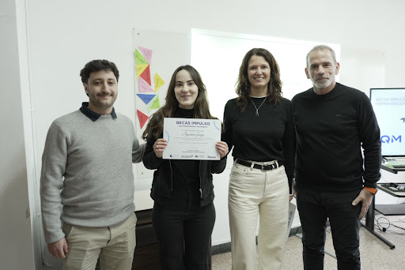

El plan de financiamiento en las Becas de Conectividad Estudiantil constituye un avance fundamental para nuestra propuesta de continuidad pedagógica. Mediante la cobertura de abonos de internet en hogares vulnerables, logramos diseñar un puente de asistencia efectiva que permite a los jóvenes sostener cursadas académicas virtuales, preparándolos eficientemente para las exigencias educativas actuales.
Ante las marcadas barreras en el acceso al estudio a distancia, este espacio brinda asignaciones críticas para que los postulantes puedan investigar, rendir y superarse.
Los beneficiarios participan activamente en talleres de uso de plataformas universitarias y descarga de materiales de estudio basados en asignaturas reales. Aprenden a resolver gestiones complejas en aulas virtuales, optimizar el uso de bibliotecas digitales y organizar redes de colaboración académica para integrarse a los grupos de estudio del ciclo lectivo regional.
Esta estrategia no solo mejora el rendimiento académico de los jóvenes becados, sino que también estimula activamente la equidad educativa multiplicando considerablemente la cantidad de profesionales egresados en los sectores vulnerables.
El proceso de asignación requirió una tarea articulada entre coordinadores y asistentes para definir situaciones críticas y postular a aquellos estudiantes necesitados o inscriptos formalmente en nuestras bases desde hace meses.
Luego de extensas jornadas de evaluación y entrevistas en los barrios, el programa quedó totalmente operativo y habilitado para coordinar las asignaciones de módems inalámbricos y subsidios de conectividad básica.
La dirección institucional celebra el lanzamiento de este nuevo espacio que transforma recursos económicos en verdaderas oportunidades de permanencia escolar y crecimiento educativo duradero.
La dirección institucional celebra el lanzamiento de este nuevo espacio que transforma recursos económicos en verdaderas oportunidades de permanencia escolar y crecimiento educativo duradero.
La adecuación del centro de becas incluyó la instalación de diez terminales de consulta totalmente renovadas con servidores de control y sistemas de validación de datos. Se contrató una plataforma de gestión ágil utilizando un software de alta capacidad que garantiza una verificación de datos rápida durante las evaluaciones diarias de solicitudes de ayuda de internet.
Los profesionales de las áreas de acción social asumieron el compromiso de coordinar las mesas de asistencia económica y talleres de orientación dentro del trayecto institucional. Esta preparación integral les permite aplicar dinámicas reales de control, manejo de perfiles en bases institucionales y resolución de problemas de cobertura en un entorno real, sumando un valor incalculable a su perfil técnico antes de ingresar al sistema de becas público.
Uno de los objetivos más ambiciosos de esta oficina es extender su beneficio más allá de los estudiantes inscriptos en la fundación. Se planifica utilizar estas instalaciones a contraturno para dictar charlas de trámites de becas dirigidas a familias del barrio, promoviendo de este modo una verdadera inserción social y comunitaria que fortalezca el estudio genuino mediante la articulación directa de la educación con el sector público.
A diferencia de las agencias de subsidios convencionales, este entorno prioriza el acompañamiento de tutores durante los primeros meses de cursada de cada alumno beneficiado. Esto ayuda a los nuevos becarios a adaptarse bajo estándares de alta exigencia académica, preparándolos para resolver tareas de investigación con herramientas sumamente eficientes, dinámicas y viables para las metas de cualquier carrera moderna.
El cuerpo coordinador organizó una nueva agenda de seguimiento que acompaña la asistencia diaria de los becados en sus respectivas aulas de clases secundarias o universitarias. Los tutores destacan que poseer este canal de conectividad hogareño agiliza notablemente la entrega de trabajos prácticos, reduciendo la deserción y mejorando la regularidad en las materias más difíciles del ciclo lectivo inicial.
Para garantizar el crecimiento del programa a lo largo del tiempo, se firmaron convenios de donación con empresas de telecomunicaciones de la región que aportarán anualmente cuentas con descuentos de forma solidaria. Este circuito de ayuda social continua asegura un flujo constante de abonos para que las próximas camadas de jóvenes estudiantes puedan seguir ingresando a estudios superiores, manteniendo el programa actualizado frente a las crecientes demandas del sistema educativo.
El avance consolidado en las Becas de Conectividad Estudiantil demuestra que la articulación entre compromiso social, educación solidaria y alianzas de conectividad puede alcanzar resultados formidables. Este espacio no es simplemente un escritorio con cuentas registradas; es un testimonio vivo del talento de nuestros jóvenes cuando tienen la contención adecuada y el puente institucional para edificar herramientas de progreso para su propia vida académica.
Queremos transmitir un enorme agradecimiento a cada una de las voluntades que empujaron la creación de este centro de becas. Desde las empresas que abrieron sus planes de descuento hasta los tutores que acompañaron en las selecciones iniciales, cada aporte profesional resultó clave para levantar un proyecto que marcará un antes y un después en nuestra querida comunidad de estudiantes.
El horizonte de la institución contempla la meta de replicar este exitoso modelo de becas en otros municipios de la región que sufren tasas de deserción escolar preocupantes. Creemos firmemente que el estudio dignifica, y nuestro grupo de profesionales voluntarios está totalmente predispuesto para asesorar a otras organizaciones en el montaje de sus propios programas.
La vinculación educativa tiene la tarea colectiva de brindar respuestas reales a las problemáticas de acceso de la juventud argentina. Con la consolidación de estos espacios, reafirmamos nuestro compromiso inquebrantable con la movilidad social y la equidad educativa, demostrando que el porvenir académico se construye desde abajo, con esfuerzo compartido, gestión colectiva y una mirada profundamente solidaria hacia el futuro de nuestro querido suelo patrio.
Cada abono que se financia en este centro educativo representa un avance directo hacia la finalización de estudios, el bienestar familiar y el desarrollo de talentos locales valiosos. Convocamos a todas las empresas a acercarse, conocer nuestros programas y participar en las próximas alianzas de patrocinio, porque el desarrollo académico de nuestros jóvenes es una construcción colectiva que nos convoca a todos por igual.

Si formás parte de una compañía o querés financiar una beca particular que tengan disponible en tu comercio, podés contactarte directamente con la secretaría del programa. Nuestro centro recibe fondos de conectividad, planes de patrocinio, talleres de herramientas digitales e instructores voluntarios que sean coordinados por el equipo para seguir expandiendo este gran proyecto de inclusión educativa.
Nuestra meta para el próximo semestre es duplicar la cantidad de alumnos conectados y empezar a dictar talleres de herramientas técnicas a los beneficiarios de la zona. Este engranaje productivo sigue marchar y demuestra que el subsidio de internet es el camino definitivo para lograr un desarrollo social que sea plenamente equitativo, inclusivo para todos y respetuoso del talento de nuestra provincia.